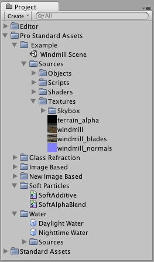

Adding assets to the Scene
There are different ways to add assets to your Scene, depending on the type of asset and the type of game you are making.
Some types of asset can be dragged directly into the Scene. Doing this will create a new GameObject:
- If you drag a 3D model asset from the Project View to the Scene View (or into the Hierarchy View), a new GameObject will be created that has a Mesh Renderer component in its Inspector, set up to display that model.
- If you drag a 2D sprite asset from the Project View to the Scene View (or into the Hierarchy View), a new GameObject will be created that has a Sprite Renderer component in its Inspector, set up to display that sprite.
- If you drag an Audio Clip asset from the Project View to the Scene View (or into the Hierarchy View), a new GameObject will be created that has an Audio Source component in its Inspector, set up to play that sound clip.
Some asset types that serve alternative purposes cannot be dragged into your Scene. You can learn more about these later in this page.
Editing assets
Most asset types can be double-clicked to view or edit the asset. Double-clicking an asset in your Project View will open a View in Unity to edit the asset or, if it can't be edited in the Unity Editor, it will launch an external editor.
When editing an asset that requires an external editor, Unity will launch whichever editor your computer is configured to use.
Putting different assets together
Most GameObjects are composed of numerous assets arranged together. For example, a complete 3D character GameObject in a game may use:
- A Mesh (FBX) asset for the 3D model, assigned to a Mesh Renderer component
- Multiple material assets to render the surface, assigned to the Mesh Renderer component
- Multiple texture (image) assets, assigned to the Materials.
- A script asset to control how the GameObject moves, assigned directly to the GameObject
- An audio asset assigned to an Audio Source component attached to the GameObject, so that the object emits sound as it moves around the scene.
Creating a prefab
A GameObject which has been set up to look, sound, or act in a specific way can be saved as a Prefab. A prefab is a stored configuration of a GameObject (or a hierarchy of GameObjects), complete with all its components and the values that were set in the Inspector.
Prefabs are essentially asset templates, so they do not appear in the Scene in their own right; instead, you create new assets (called instances) from the template. For example, you might use a prefab to store the template of a tree object, and then create many tree instances from that template for a forest scene.
Changing values in instances of a prefab are recorded as changes only to that instance, allowing you to make individual variations. Changes made to an instance can be saved back to the original prefab (menu: GameObject > Apply Changes to Prefab).
By default, changes made to the prefab are automatically applied to all of the assets created from it, so using prefabs can be a good way to maintain consistency among a set of objects. However, this will not affect instances in which the same value has been changed. You can also break the link between the instance and the prefab if you want to create special variations on the original.
To create a prefab from a GameObject in your Scene, simply drag the GameObject from the Scene into the Project View. The GameObject's name text highlights to let you rename it if you need to.
For more information on prefabs, see the Prefabs page.
Updating assets
After importing and using your assets in your game, you may want to make further edits to your source assets. Unity will detect changes to any of the files you've saved in the Assets folder, and will re-import your new changes. Your changes will take effect wherever this asset was used in your prefabs or Scenes.
A large part of designing a game is using your asset source files for your GameObjects. This goes for textures, models, sound effects and behaviour scripts. The Project View gives you quick access to all of the files that make up your game:

This view shows the organization of files in your project's Assets folder. Whenever you update one of your asset files, the changes are immediately reflected in your game.
To automatically import an asset file into your Unity project, move the file into (your Project folder)->Assets in the Finder. To apply your assets, simply drag the asset file from the Project View into the Hierarchy View or the Scene View. If the asset is meant to be applied to another GameObject, drag the asset over the target GameObject.
Hints
- It is always a good idea to add labels to your assets when you are working with big projects, or when you want to keep all your assets organized. This allows you to search for the labels associated with each asset in the in the Project View's search field.
- When backing up a project folder, always back up the Assets and ProjectSettings folders. Unity supports the enabling of visible metadata files, which are stored in the Assets folder, so there is no need to back up the Library folder - but it may be helpful to do so anyway.
- You can rename and move files freely within the Project View.
- Never rename or move files associated with your project outside of the Unity Editor. Unity stores lots of metadata for each asset (things like import settings and cached versions of compressed textures), and if you move a file externally Unity can no longer associate this metadata with the moved file, so you may lose information.